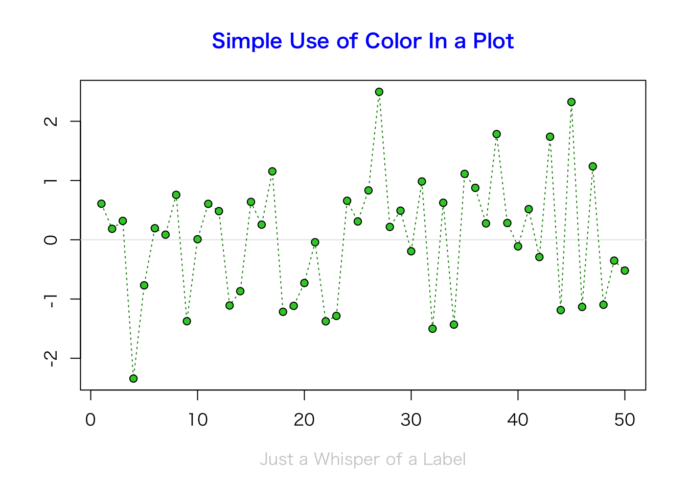
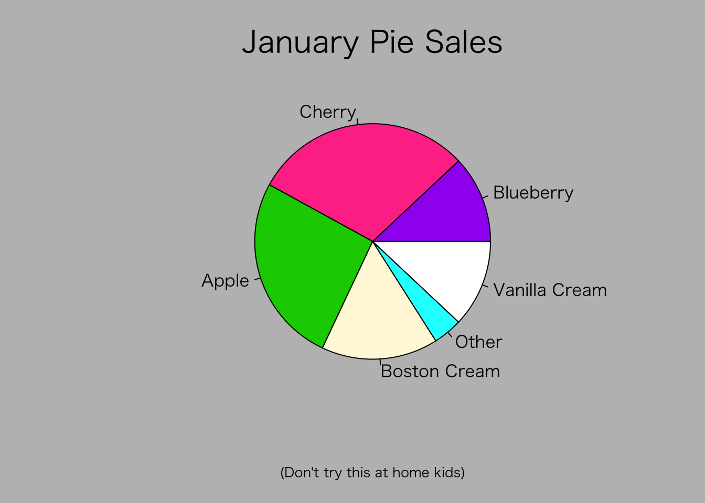
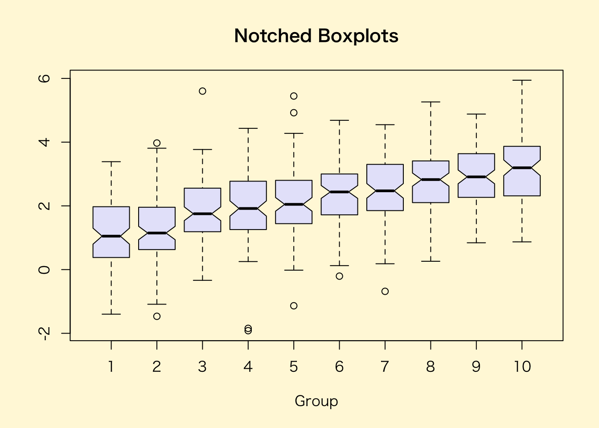
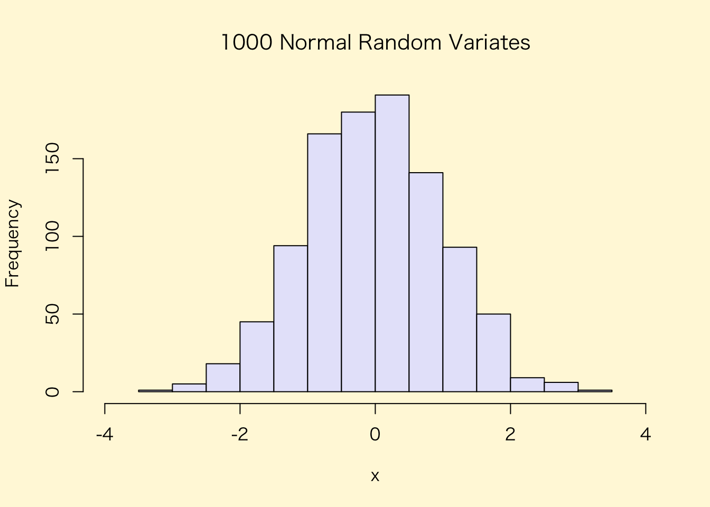

plot> ## Show the different plot types
plot> x <- 0:12
plot> y <- sin(pi/5 * x)
plot> op <- par(mfrow = c(3,3), mar = .1+ c(2,2,3,1))
plot> for (tp in c("p","l","b", "c","o","h", "s","S","n")) {
plot+ plot(y ~ x, type = tp, main = paste0("plot(*, type = \"", tp, "\")"))
plot+ if(tp == "S") {
plot+ lines(x, y, type = "s", col = "red", lty = 2)
plot+ mtext("lines(*, type = \"s\", ...)", col = "red", cex = 0.8)
plot+ }
plot+ }
plot> par(op)
plot> ##--- Log-Log Plot with custom axes
plot> lx <- seq(1, 5, length.out = 41)
plot> yl <- expression(e^{-frac(1,2) * {log[10](x)}^2})
plot> y <- exp(-.5*lx^2)
plot> op <- par(mfrow = c(2,1), mar = par("mar")-c(1,0,2,0), mgp = c(2, .7, 0))
plot> plot(10^lx, y, log = "xy", type = "l", col = "purple",
plot+ main = "Log-Log plot", ylab = yl, xlab = "x")
plot> plot(10^lx, y, log = "xy", type = "o", pch = ".", col = "forestgreen",
plot+ main = "Log-Log plot with custom axes", ylab = yl, xlab = "x",
plot+ axes = FALSE, frame.plot = TRUE)
demo(graphics)
---- ~~~~~~~~
> # Copyright (C) 1997-2009 The R Core Team
>
> require(datasets)
> require(grDevices); require(graphics)
> ## Here is some code which illustrates some of the differences between
> ## R and S graphics capabilities. Note that colors are generally specified
> ## by a character string name (taken from the X11 rgb.txt file) and that line
> ## textures are given similarly. The parameter "bg" sets the background
> ## parameter for the plot and there is also an "fg" parameter which sets
> ## the foreground color.
>
>
> x <- stats::rnorm(50)
> opar <- par(bg = "white")
> plot(x, ann = FALSE, type = "n")

> abline(h = 0, col = gray(.90))
> lines(x, col = "green4", lty = "dotted")
> points(x, bg = "limegreen", pch = 21)
> title(main = "Simple Use of Color In a Plot",
+ xlab = "Just a Whisper of a Label",
+ col.main = "blue", col.lab = gray(.8),
+ cex.main = 1.2, cex.lab = 1.0, font.main = 4, font.lab = 3)
> ## A little color wheel. This code just plots equally spaced hues in
> ## a pie chart. If you have a cheap SVGA monitor (like me) you will
> ## probably find that numerically equispaced does not mean visually
> ## equispaced. On my display at home, these colors tend to cluster at
> ## the RGB primaries. On the other hand on the SGI Indy at work the
> ## effect is near perfect.
>
> par(bg = "gray")
> pie(rep(1,24), col = rainbow(24), radius = 0.9)
> title(main = "A Sample Color Wheel", cex.main = 1.4, font.main = 3)
> title(xlab = "(Use this as a test of monitor linearity)",
+ cex.lab = 0.8, font.lab = 3)
> ## We have already confessed to having these. This is just showing off X11
> ## color names (and the example (from the postscript manual) is pretty "cute".
>
> pie.sales <- c(0.12, 0.3, 0.26, 0.16, 0.04, 0.12)
> names(pie.sales) <- c("Blueberry", "Cherry",
+ "Apple", "Boston Cream", "Other", "Vanilla Cream")
> pie(pie.sales,
+ col = c("purple","violetred1","green3","cornsilk","cyan","white"))

> title(main = "January Pie Sales", cex.main = 1.8, font.main = 1)
> title(xlab = "(Don't try this at home kids)", cex.lab = 0.8, font.lab = 3)
> ## Boxplots: I couldn't resist the capability for filling the "box".
> ## The use of color seems like a useful addition, it focuses attention
> ## on the central bulk of the data.
>
> par(bg="cornsilk")
> n <- 10
> g <- gl(n, 100, n*100)
> x <- rnorm(n*100) + sqrt(as.numeric(g))
> boxplot(split(x,g), col="lavender", notch=TRUE)

> title(main="Notched Boxplots", xlab="Group", font.main=4, font.lab=1)
> ## An example showing how to fill between curves.
>
> par(bg="white")
> n <- 100
> x <- c(0,cumsum(rnorm(n)))
> y <- c(0,cumsum(rnorm(n)))
> xx <- c(0:n, n:0)
> yy <- c(x, rev(y))
> plot(xx, yy, type="n", xlab="Time", ylab="Distance")
> polygon(xx, yy, col="gray")
> title("Distance Between Brownian Motions")
> ## Colored plot margins, axis labels and titles. You do need to be
> ## careful with these kinds of effects. It's easy to go completely
> ## over the top and you can end up with your lunch all over the keyboard.
> ## On the other hand, my market research clients love it.
>
> x <- c(0.00, 0.40, 0.86, 0.85, 0.69, 0.48, 0.54, 1.09, 1.11, 1.73, 2.05, 2.02)
> par(bg="lightgray")
> plot(x, type="n", axes=FALSE, ann=FALSE)
> usr <- par("usr")
> rect(usr[1], usr[3], usr[2], usr[4], col="cornsilk", border="black")
> lines(x, col="blue")
> points(x, pch=21, bg="lightcyan", cex=1.25)
> axis(2, col.axis="blue", las=1)
> axis(1, at=1:12, lab=month.abb, col.axis="blue")
> box()
> title(main= "The Level of Interest in R", font.main=4, col.main="red")
> title(xlab= "1996", col.lab="red")
> ## A filled histogram, showing how to change the font used for the
> ## main title without changing the other annotation.
>
> par(bg="cornsilk")
> x <- rnorm(1000)
> hist(x, xlim=range(-4, 4, x), col="lavender", main="")

> title(main="1000 Normal Random Variates", font.main=3)
> ## A scatterplot matrix
> ## The good old Iris data (yet again)
>
> pairs(iris[1:4], main="Edgar Anderson's Iris Data", font.main=4, pch=19)